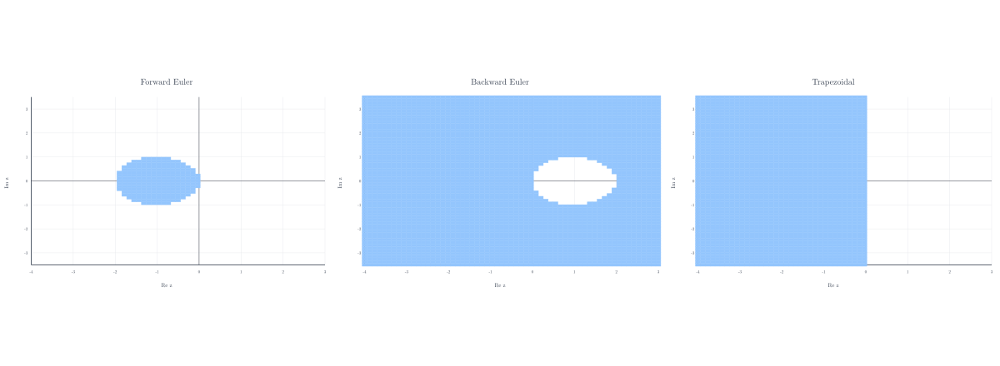
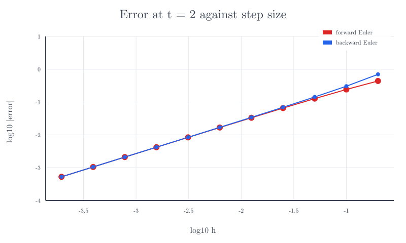
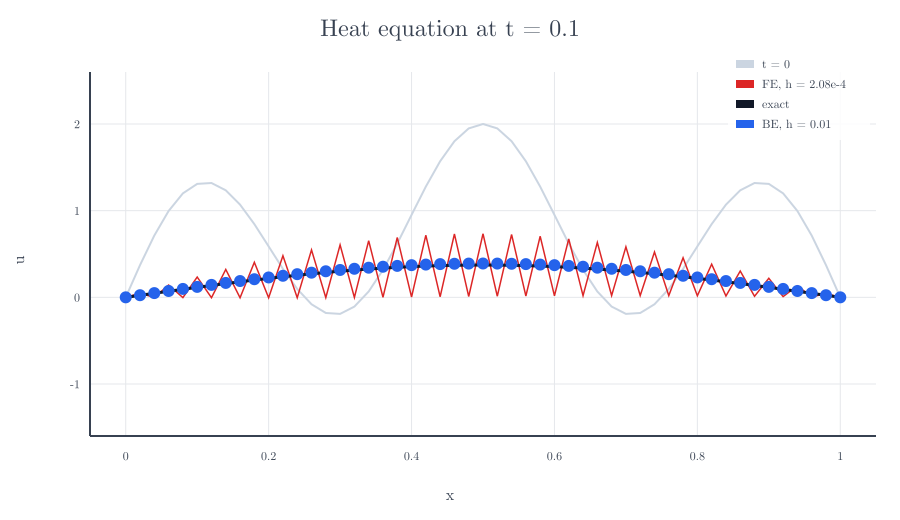
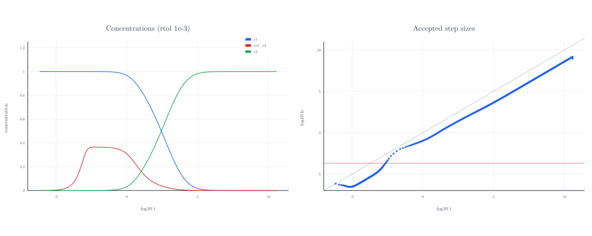

Backward Euler: Stability Bought With an Equation Solve
Abstract
Forward Euler steps along the slope at the start of each step; backward Euler uses the slope at the end, \(y_{n+1}=y_n+h\,f(t_{n+1},y_{n+1})\), so every step means solving an equation. We derive what that buys. On \(y'=\lambda y\) the method multiplies by \(R(z)=1/(1-z)\) with \(z=h\lambda\), which has magnitude below 1 on the whole left half-plane (A-stability) and tends to 0 as \(z\to-\infty\) (L-stability). Its local error is \(-\tfrac{h^2}{2}y''\), the mirror image of forward Euler's, and a convergence study confirms first order with errors of equal size and opposite sign. On the heat equation discretised on 49 interior points, forward Euler needs steps below \(2\times10^{-4}\) and explodes just above that, while backward Euler is stable with steps 50 times larger. On Robertson's stiff chemical kinetics, backward Euler with step-doubling error control integrates to \(t=4\times10^{10}\) in 738 steps at a relative tolerance of \(10^{-3}\), where forward Euler would need about \(2\times10^{14}\).
The method
An implicit step
Integrating \(y'=f(t,y)\) over one step and approximating the integral by its right endpoint gives
The unknown appears on both sides. backward_euler() solves
\(G(Y)=Y-y_n-h\,f(t_{n+1},Y)=0\) by Newton's method,
starting from the forward Euler value and building \(J_f\) by central differences. For a linear \(f\), one Newton iteration solves the step exactly. Each step therefore costs a Jacobian and a linear solve, \(O(d^3)\) for a system of size \(d\), against one evaluation of \(f\) for forward Euler.
Local error
Expand the exact solution about \(t_{n+1}\): \(y(t_n)=y(t_{n+1})-h\,y'(t_{n+1})+\tfrac{h^2}2y''+O(h^3)\). So the exact solution satisfies the scheme up to
while forward Euler's local error is \(+\tfrac{h^2}{2}y''\). Summing about \(1/h\) local errors gives a global error of order \(h\) for both, with leading terms of opposite sign. Averaging the two slopes cancels them; that is the trapezoidal rule, which is second order.
Stability
Apply a one-step method to the test equation \(y'=\lambda y\), \(\mathrm{Re}\,\lambda<0\), whose solutions decay. Each step multiplies \(y_n\) by a stability function of \(z=h\lambda\):
The numerical solution decays when \(|R(z)|<1\). For backward Euler,
\(|1-z|\ge1-\mathrm{Re}\,z>1\) whenever \(\mathrm{Re}\,z<0\), so it decays for
every step size: the method is A-stable. Forward Euler needs \(|1+z|<1\), a
disc of radius 1 centred at \(-1\); for real \(\lambda<0\) that means
\(h<2/|\lambda|\). The trapezoidal rule is also A-stable, but
\(R_{\text{TR}}(z)\to-1\) as \(z\to-\infty\), so very fast modes are not damped
and flip sign each step. Backward Euler's \(R(z)\to0\): fast modes are wiped out
in a single step. That stronger property is L-stability.
stability_function() evaluates these functions.
#include <dm/dm.hpp>
namespace alg = dm::algorithms;
int main() {
std::filesystem::create_directories("build");
using M = alg::OdeMethod;
std::print("| \\(z=h\\lambda\\) | \\(|R_\\text{{FE}}|\\) | \\(|R_\\text{{BE}}|\\) | \\(R_\\text{{TR}}\\) |\n| ---: | ---: | ---: | ---: |\n");
for (double z : {-0.1, -1.0, -1.9, -2.1, -10.0, -100.0, -1e4})
std::print("| {} | {:.4g} | {:.4g} | {:.4g} |\n", z,
std::abs(alg::stability_function(M::ForwardEuler, z)),
std::abs(alg::stability_function(M::BackwardEuler, z)),
alg::stability_function(M::Trapezoidal, z).real());
std::vector<double> xs, ys;
for (int i = 0; i <= 60; ++i) xs.push_back(-4.0 + 7.0 * i / 60);
for (int j = 0; j <= 60; ++j) ys.push_back(-3.5 + 7.0 * j / 60);
auto panel = [&](M method, const char *title) {
std::vector<std::vector<double>> z(xs.size(),
std::vector<double>(ys.size()));
for (std::size_t i = 0; i < xs.size(); ++i)
for (std::size_t j = 0; j < ys.size(); ++j)
z[i][j] =
std::abs(alg::stability_function(method, {xs[i], ys[j]})) <=
1.0 ? 1.0 : std::nan("");
return dm::graphics::RPlot::create().image(xs, ys, z,
{dm::RGB{147, 197, 253}},
0.0, 1.0).abline_v(
0.0, dm::RGB{17, 24, 39}, 1.0).abline_h(0.0, dm::RGB{17, 24, 39},
1.0).x_limits(-4, 3).y_limits(-3.5, 3.5).title(title).x_label("Re z").y_label("Im z");
};
dm::graphics::RLayout::create(1, 3).add(panel(M::ForwardEuler,
"Forward Euler")).add(
panel(M::BackwardEuler, "Backward Euler")).add(panel(M::Trapezoidal,
"Trapezoidal")).size(1200, 440).save_svg("build/backward_euler_stability.svg");
}| \(z=h\lambda\) | ( | R_\text{FE} | ) | ( | R_\text{BE} | ) | \(R_\text{TR}\) |
|---|---|---|---|---|---|---|---|
| -0.1 | 0.9 | 0.9091 | 0.9048 | ||||
| -1 | 0 | 0.5 | 0.3333 | ||||
| -1.9 | 0.9 | 0.3448 | 0.02564 | ||||
| -2.1 | 1.1 | 0.3226 | -0.02439 | ||||
| -10 | 9 | 0.09091 | -0.6667 | ||||
| -100 | 99 | 0.009901 | -0.9608 | ||||
| -10000 | 9999 | 9.999e-05 | -0.9996 |

The shaded regions match the derivation: forward Euler's is the disc \(|1+z|\le1\), backward Euler's is everything outside the disc \(|1-z|<1\) (including much of the right half-plane, where it damps solutions that should grow), and the trapezoidal rule's is exactly the left half-plane. The table shows the difference on the negative real axis. Forward Euler's factor passes 1 at \(z=-2\) and then grows without bound. Backward Euler's shrinks like \(1/|z|\), to \(10^{-4}\) at \(z=-10^4\). The trapezoidal factor stays below 1 in size but approaches \(-1\): at \(z=-10^4\) a fast mode loses only 0.04% of its amplitude per step and changes sign every step.
First-order convergence
The test problem \(y'=y-t^2+1\), \(y(0)=0.5\) on \([0,2]\) has the exact solution \(y(t)=(t+1)^2-\tfrac12e^t\), with \(y(2)=9-\tfrac12e^2\). The block solves it with both Euler methods for step counts from 10 to 10,240.
#include <dm/dm.hpp>
namespace alg = dm::algorithms;
int main() {
std::filesystem::create_directories("build");
const auto f = [](double t, const std::vector<double> & y) {
return std::vector<double>{y[0] - t * t + 1.0};
};
const double exact = 9.0 - 0.5 * std::exp(2.0);
std::print("| steps | \\(h\\) | forward error | backward error | ratio | average error |\n| ---: | ---: | ---: | ---: | ---: | ---: |\n");
std::vector<double> lh, lfe, lbe;
double previous = 0;
for (int steps = 10; steps <= 10240; steps *= 2) {
const double fe =
alg::euler_method(f, {0.5}, 0.0, 2.0, steps).y.back()[0] - exact;
const double be =
alg::backward_euler(f, {0.5}, 0.0, 2.0, steps).y.back()[0] - exact;
std::print("| {} | {:.3g} | {:.3e} | {:.3e} | {} | {:.2e} |\n", steps,
2.0 / steps, fe, be,
previous ? std::format("{:.3f}", previous / be)
: std::string("–"), 0.5 * (fe + be));
previous = be;
lh.push_back(std::log10(2.0 / steps));
lfe.push_back(std::log10(std::abs(fe)));
lbe.push_back(std::log10(std::abs(be)));
}
dm::graphics::RPlot::create().lines(lh, lfe, "", dm::RGB{220, 38, 38}, 2.0).points(lh, lfe, "", dm::RGB{220, 38, 38}, 6.0).lines(lh, lbe, "", dm::RGB{37, 99, 235}, 2.0).points(lh, lbe, "", dm::RGB{37, 99, 235}, 4.0).legend({"forward Euler", "backward Euler"}, {dm::RGB{220, 38, 38}, dm::RGB{37, 99, 235}}).y_limits(-4, 1).title("Error at t = 2 against step size").x_label("log10 h").y_label("log10 |error|").size(800, 480).save_svg("build/backward_euler_convergence.svg");
}| steps | \(h\) | forward error | backward error | ratio | average error |
|---|---|---|---|---|---|
| 10 | 0.2 | -4.397e-01 | 7.006e-01 | – | 1.30e-01 |
| 20 | 0.1 | -2.420e-01 | 3.044e-01 | 2.301 | 3.12e-02 |
| 40 | 0.05 | -1.275e-01 | 1.429e-01 | 2.130 | 7.72e-03 |
| 80 | 0.025 | -6.550e-02 | 6.935e-02 | 2.061 | 1.93e-03 |
| 160 | 0.0125 | -3.321e-02 | 3.417e-02 | 2.029 | 4.81e-04 |
| 320 | 0.00625 | -1.672e-02 | 1.696e-02 | 2.015 | 1.20e-04 |
| 640 | 0.00313 | -8.390e-03 | 8.451e-03 | 2.007 | 3.01e-05 |
| 1280 | 0.00156 | -4.203e-03 | 4.218e-03 | 2.004 | 7.52e-06 |
| 2560 | 0.000781 | -2.103e-03 | 2.107e-03 | 2.002 | 1.88e-06 |
| 5120 | 0.000391 | -1.052e-03 | 1.053e-03 | 2.001 | 4.70e-07 |
| 10240 | 0.000195 | -5.262e-04 | 5.264e-04 | 2.000 | 1.17e-07 |

Both methods are first order: halving \(h\) halves the error, and the ratio of successive backward Euler errors approaches 2.000. The errors have opposite signs, forward Euler low and backward Euler high, and nearly equal sizes, as the local-error expansion predicts. Their average has an error that falls by a factor of 4 per halving, from \(1.3\times10^{-1}\) to \(1.2\times10^{-7}\): the average behaves like a second-order method, which is the trapezoidal rule's advantage. On this non-stiff problem backward Euler gains nothing over forward Euler and costs a Newton solve per step.
A stiff problem: the heat equation
The heat equation \(u_t=u_{xx}\) on \([0,1]\) with \(u=0\) at both ends, discretised by central differences on \(N=49\) interior points (\(\Delta x=0.02\)), becomes the linear system \(u'=Au\) with \((Au)_i=(u_{i-1}-2u_i+u_{i+1})/\Delta x^2\). Its eigenvalues are
from \(\lambda_1\approx-\pi^2\approx-9.87\) to \(\lambda_{49}\approx-4/\Delta x^2=-9990\). The ratio of 1,000 between the fastest and slowest decay rates is what makes the system stiff. Forward Euler must keep \(h|\lambda_{49}|<2\), so \(h<2.002\times10^{-4}\), even though the solution worth computing changes on a time scale of \(1/\pi^2\approx0.1\). The initial condition \(u_0=\sin\pi x+\sin5\pi x\) has the exact solution \(u=e^{-\pi^2t}\sin\pi x+e^{-25\pi^2t}\sin5\pi x\). The block integrates to \(t=0.1\).
#include <dm/dm.hpp>
namespace alg = dm::algorithms;
int main() {
std::filesystem::create_directories("build");
const int N = 49;
const double dx = 1.0 / (N + 1), pi = std::numbers::pi, T = 0.1;
const auto heat = [&](double, const std::vector<double> & u) {
std::vector<double> du(N);
for (int i = 0; i < N; ++i)
du[i] =
((i > 0 ? u[i - 1] : 0.0) - 2 * u[i] + (i + 1 < N ? u[i + 1]
: 0.0)) / (dx * dx);
return du;
};
std::vector<double> x(N), u0(N), exact(N);
for (int i = 0; i < N; ++i) {
x[i] = (i + 1) * dx;
u0[i] = std::sin(pi * x[i]) + std::sin(5 * pi * x[i]);
exact[i] =
std::exp(-pi * pi * T) * std::sin(pi * x[i]) + std::exp(
-25 * pi * pi * T) * std::sin(5 * pi * x[i]);
}
auto max_error = [&](const std::vector<double> & u) {
double e = 0;
for (int i = 0; i < N; ++i) e = std::max(e, std::abs(u[i] - exact[i]));
return e;
};
std::print("Fastest eigenvalue: {:.1f}; forward Euler limit h < {:.4e}.\n\n",
-4 / (dx * dx) * std::pow(std::sin(N * pi * dx / 2), 2),
2 / (4 / (dx * dx) * std::pow(std::sin(N * pi * dx / 2), 2)));
std::print("| method | \\(h\\) | steps | \\(h\\lvert\\lambda_{{49}}\\rvert\\) | max error at \\(t=0.1\\) | ms |\n| --- | ---: | ---: | ---: | ---: | ---: |\n");
struct Run {
const char *name;
bool implicit;
int steps;
};
std::vector<double> fe_bad, be_big;
for (const Run r : {Run{"forward Euler", false, 1000},
Run{"forward Euler", false, 500},
Run{"forward Euler", false, 490},
Run{"forward Euler", false, 480},
Run{"forward Euler", false, 400},
Run{"backward Euler", true, 1000},
Run{"backward Euler", true, 100},
Run{"backward Euler", true, 10}}) {
const auto t0 = std::chrono::steady_clock::now();
const auto sol =
r.implicit ? alg::backward_euler(heat, u0, 0.0, T, r.steps)
: alg::euler_method(heat, u0, 0.0, T, r.steps);
const double ms =
std::chrono::duration<double, std::milli>(std::chrono::steady_clock::now() -
t0).count();
const double h = T / r.steps;
std::print("| {} | {:.3g} | {} | {:.3f} | {:.3e} | {:.1f} |\n", r.name,
h, r.steps,
h * 4 / (dx * dx) * std::pow(std::sin(N * pi * dx / 2), 2),
max_error(sol.y.back()), ms);
if (!r.implicit && r.steps == 480) fe_bad = sol.y.back();
if (r.implicit && r.steps == 10) be_big = sol.y.back();
}
std::vector<double> xb{0.0}, eb{0.0}, bb{0.0}, fb{0.0}, ub{0.0};
for (int i = 0; i < N; ++i) {
xb.push_back(x[i]);
eb.push_back(exact[i]);
bb.push_back(be_big[i]);
fb.push_back(fe_bad[i]);
ub.push_back(u0[i]);
}
xb.push_back(1.0);
for (auto *v : {&eb, &bb, &fb, &ub}) v->push_back(0.0);
dm::graphics::RPlot::create().lines(xb, ub, "", dm::RGB{203, 213, 225}, 2.0).lines(xb, fb, "", dm::RGB{220, 38, 38}, 1.5).lines(xb, eb, "", dm::RGB{17, 24, 39}, 3.0).points(xb, bb, "", dm::RGB{37, 99, 235}, 6.0).legend({"t = 0", "FE, h = 2.08e-4", "exact", "BE, h = 0.01"}, {dm::RGB{203, 213, 225}, dm::RGB{220, 38, 38}, dm::RGB{17, 24, 39}, dm::RGB{37, 99, 235}}).y_limits(-1.6, 2.6).title("Heat equation at t = 0.1").x_label("x").y_label("u").size(900, 520).save_svg("build/backward_euler_heat.svg");
}Fastest eigenvalue: -9990.1; forward Euler limit h < 2.0020e-04.
| method | \(h\) | steps | \(h\lvert\lambda_{49}\rvert\) | max error at \(t=0.1\) | ms |
|---|---|---|---|---|---|
| forward Euler | 0.0001 | 1000 | 0.999 | 6.052e-05 | 0.5 |
| forward Euler | 0.0002 | 500 | 1.998 | 2.422e-04 | 0.2 |
| forward Euler | 0.000204 | 490 | 2.039 | 2.496e-04 | 0.2 |
| forward Euler | 0.000208 | 480 | 2.081 | 3.624e-01 | 0.2 |
| forward Euler | 0.00025 | 400 | 2.498 | 3.848e+53 | 0.2 |
| backward Euler | 0.0001 | 1000 | 0.999 | 3.024e-04 | 73.6 |
| backward Euler | 0.001 | 100 | 9.990 | 1.928e-03 | 7.3 |
| backward Euler | 0.01 | 10 | 99.901 | 1.756e-02 | 1.1 |

The stability limit is sharp. Forward Euler with \(h=2\times10^{-4}\) (\(h|\lambda_{49}|=1.998\)) is accurate to \(2.4\times10^{-4}\), and at \(h=2.04\times10^{-4}\) the unstable mode still has not grown from rounding level to anything visible in 490 steps. At \(h=2.08\times10^{-4}\) it has: the fastest mode, an alternating zig-zag between grid points with amplitude factor \(|1-2.081|=1.081\) per step, grows from about \(10^{-16}\) to 0.36 in 480 steps. At \(h=2.5\times10^{-4}\) the error is \(4\times10^{53}\). None of this mode is in the initial data; rounding alone seeds it.
Backward Euler has no such limit. With 10 steps of \(h=0.01\), a hundred times past forward Euler's limit, the error is \(1.8\times10^{-2}\), and the fast modes are damped by a factor of about 100 per step rather than amplified. Its error is set by accuracy, not stability: it falls in proportion to \(h\), and at equal step size it is larger than forward Euler's. The slow mode \(e^{-\pi^2t}\) is approximated by \((1+h\pi^2)^{-n}\), which decays too slowly, and so does the spatially discretised mode (its rate is \(\pi^2(1-\pi^2\Delta x^2/12)\)); forward Euler's \((1-h\pi^2)^n\) decays too fast and partly cancels the spatial error. Each implicit step here builds a \(49\times49\) Jacobian by differences, so per step it costs far more; a production code would pass the (tridiagonal) Jacobian directly.
Robertson's chemical kinetics
Robertson's reaction system (1966) is the classic stiff test problem: three species with rate constants spanning nine orders of magnitude,
The right-hand sides sum to zero, so \(y_1+y_2+y_3=1\) for all time. The intermediate \(y_2\) is created slowly and destroyed fast, so it settles within about \(10^{-2}\) time units onto a slow manifold where it stays tiny, and the solution then evolves on time scales up to \(10^{10}\). Linearising, the fast eigenvalue is about \(-(10^4y_3+6\times10^7y_2)\), close to \(-10^4\) once \(y_3\approx1\). Forward Euler would therefore need \(h<2\times10^{-4}\) for the whole run: \(2\times10^{14}\) steps to reach \(t=4\times10^{10}\).
backward_euler_adaptive() controls the step by step doubling: it takes one
step of size \(h\) and two of size \(h/2\). Their difference is about
\(\tfrac{h^2}{4}y''\), an estimate of the local error of the half steps, and
since that error is \(O(h^2)\), the next step is scaled by
\(0.9/\sqrt{\text{err}}\). The block runs three relative tolerances with
\(10^{-14}\) as the absolute tolerance, since \(y_2\) falls to \(10^{-13}\), and
compares with reference values computed by a fifth-order Radau method at a
relative tolerance of \(10^{-12}\).
#include <dm/dm.hpp>
namespace alg = dm::algorithms;
int main() {
std::filesystem::create_directories("build");
const auto robertson = [](double, const std::vector<double> & y) {
return std::vector<double>{-0.04 * y[0] + 1e4 * y[1] * y[2],
0.04 * y[0] - 1e4 * y[1] * y[2] -
3e7 * y[1] * y[1], 3e7 * y[1] * y[1]};
};
// Reference solution (SciPy Radau, rtol 1e-12) at t = 0.4, 4e2, 4e5, 4e10.
const double ref_t[] = {0.4, 400.0, 4e5, 4e10};
const double ref_y1[] = {0.9851721138609921, 0.45051866847111177,
0.004938274520980084, 5.208345176317862e-08};
std::print("| rtol | accepted | rejected | \\(f\\) calls | Newton iterations | ms | \\(y_1\\) rel. error at 0.4 | at 400 | at \\(4\\times10^5\\) | at \\(4\\times10^{{10}}\\) | \\(\\max\\lvert\\sum y-1\\rvert\\) |\n" "| ---: | ---: | ---: | ---: | ---: | ---: | ---: | ---: | ---: | ---: | ---: |\n");
alg::AdaptiveOdeResult keep;
for (double rtol : {1e-2, 1e-3, 1e-4}) {
const auto t0 = std::chrono::steady_clock::now();
auto r =
alg::backward_euler_adaptive(robertson, {1.0, 0.0, 0.0}, 0.0, 4e10,
rtol, 1e-14, 1e-6);
const double ms =
std::chrono::duration<double, std::milli>(std::chrono::steady_clock::now() -
t0).count();
std::string errs;
for (int k = 0; k < 4; ++k) {
// Interpolate y1 in log t between the accepted points around ref_t[k].
const auto &t = r.solution.t;
std::size_t i =
std::upper_bound(t.begin(), t.end(), ref_t[k]) - t.begin();
i = std::min(i, t.size() - 1);
const double w =
(std::log(ref_t[k]) - std::log(t[i - 1])) / (
std::log(t[i]) - std::log(t[i - 1]));
const double y1 =
std::exp((1 - w) * std::log(r.solution.y[i - 1][0]) +
w * std::log(r.solution.y[i][0]));
errs += std::format(" {:.1e} |", (y1 - ref_y1[k]) / ref_y1[k]);
}
double drift = 0;
for (const auto &y : r.solution.y)
drift = std::max(drift, std::abs(y[0] + y[1] + y[2] - 1.0));
std::print("| {:g} | {} | {} | {} | {} | {:.1f} |{} {:.1e} |\n", rtol,
r.accepted, r.rejected, r.f_evaluations, r.newton_iterations,
ms, errs, drift);
if (rtol == 1e-3) keep = std::move(r);
}
std::vector<double> lt, y1, y2, y3, lh;
for (std::size_t i = 1; i < keep.solution.t.size(); ++i) {
lt.push_back(std::log10(keep.solution.t[i]));
y1.push_back(keep.solution.y[i][0]);
y2.push_back(1e4 * keep.solution.y[i][1]);
y3.push_back(keep.solution.y[i][2]);
lh.push_back(std::log10(keep.step_sizes[i - 1]));
}
auto species =
dm::graphics::RPlot::create().lines(lt, y1, "", dm::RGB{37, 99, 235},
2.0).lines(lt, y2, "",
dm::RGB{220, 38, 38}, 2.0).lines(lt, y3, "", dm::RGB{22, 163, 74}, 2.0).legend({"y1", "1e4 · y2", "y3"}, {dm::RGB{37, 99, 235}, dm::RGB{220, 38, 38}, dm::RGB{22, 163, 74}}).y_limits(0, 1.25).title("Concentrations (rtol 1e-3)").x_label("log10 t").y_label("concentration");
auto steps =
dm::graphics::RPlot::create().points(lt, lh, "", dm::RGB{37, 99, 235},
3.0).abline(std::log10(1.0), 1.0,
dm::RGB{148, 163, 184},
1.0).abline_h(
std::log10(2e-4), dm::RGB{220, 38, 38}, 1.0).y_limits(-7, 11).title(
"Accepted step sizes").x_label("log10 t").y_label("log10 h");
dm::graphics::RLayout::create(1, 2).add(species).add(steps).size(1200, 480).save_svg("build/backward_euler_robertson.svg");
}| rtol | accepted | rejected | \(f\) calls | Newton iterations | ms | \(y_1\) rel. error at 0.4 | at 400 | at \(4\times10^5\) | at \(4\times10^{10}\) | \(\max\lvert\sum y-1\rvert\) |
|---|---|---|---|---|---|---|---|---|---|---|
| 0.01 | 254 | 3 | 15939 | 2111 | 2.8 | -1.4e-04 | 1.5e-02 | 6.1e-02 | 6.4e-02 | 6.7e-16 |
| 0.001 | 738 | 4 | 39057 | 5075 | 6.3 | 3.8e-05 | 5.3e-03 | 1.9e-02 | 2.0e-02 | 2.2e-15 |
| 0.0001 | 2207 | 4 | 98819 | 12427 | 16.5 | 1.4e-05 | 1.7e-03 | 6.1e-03 | 6.4e-03 | 2.1e-15 |

The adaptive integration reaches \(t=4\times10^{10}\) in 254, 738 and 2,207 accepted steps at relative tolerances of \(10^{-2}\), \(10^{-3}\) and \(10^{-4}\), with only 3 or 4 rejected steps each and a few milliseconds of time. Tightening the tolerance tenfold multiplies the steps by about 3, close to \(\sqrt{10}\), as an \(O(h^2)\) local error predicts. The conservation law \(y_1+y_2+y_3=1\) holds to \(2\times10^{-15}\): it is linear, and both the Newton iteration and the difference Jacobian respect linear invariants exactly, up to rounding.
The accuracy follows the tolerance too, but the error accumulates: at \(t=0.4\) the relative error in \(y_1\) is at most \(1.4\times10^{-4}\), while at \(4\times10^{10}\) it is 6.4%, 2.0% and 0.64% for the three tolerances. That is the price of a first-order method controlled by local error: higher-order stiff solvers (BDF, Radau) reach the same accuracy in far fewer steps.
The step-size plot shows the method's character. During the initial transient, while \(y_2\) rises to its plateau, steps stay below about \(3\times10^{-5}\). Once the solution is on the slow manifold the step grows roughly in proportion to \(t\), crossing forward Euler's limit of \(2\times10^{-4}\) before \(t=10^{-2}\) and reaching \(10^9\) by the end, thirteen orders of magnitude past it. The fast eigenvalue is still there, but backward Euler damps it at every step instead of resolving it.
Summary
- Backward Euler's stability function \(1/(1-z)\) is below 1 in size on the whole left half-plane and tends to 0 for very stiff modes: it is A-stable and L-stable. The trapezoidal rule is A-stable but lets stiff modes ring with factor near \(-1\).
- Its local error is \(-\tfrac{h^2}2y''\), the negative of forward Euler's; both converge at first order with nearly equal and opposite errors.
- On the heat equation with 49 points, forward Euler fails sharply just above \(h=2.0\times10^{-4}\); backward Euler is stable at \(h=0.01\), with accuracy, not stability, limiting the step.
- On Robertson's kinetics, step-doubling control lets backward Euler take steps up to \(10^9\) and reach \(t=4\times10^{10}\) in a few hundred steps, against \(2\times10^{14}\) for forward Euler, with accuracy that tightens as \(\sqrt{\text{tol}}\) in cost.